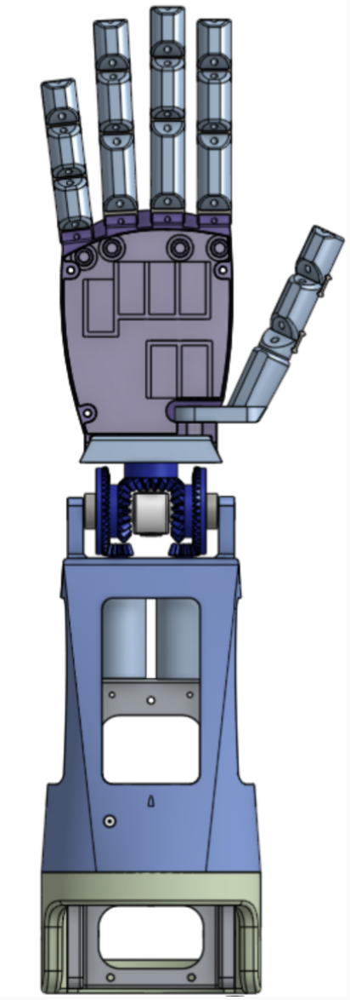
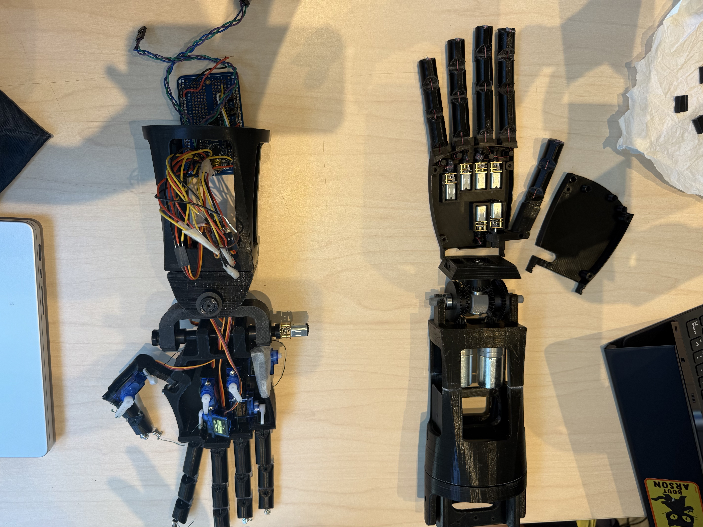

Bionic Arm


What
- Serving as a board member on a team developing a wearable bionic arm prosthetic, spanning from the fingers to the forearm
- Improving onto previous design (left)
How?
- Designed on OnShape
- Created flexible finger joints with Form 3 SLA resin printing
- 3D printed structural components in PLA and contributed to full product assembly
Results
- Selected resin for the finger joints allowed smooth articulation during the demonstration
- Updated design (right) features a cleaner and more refined appearance